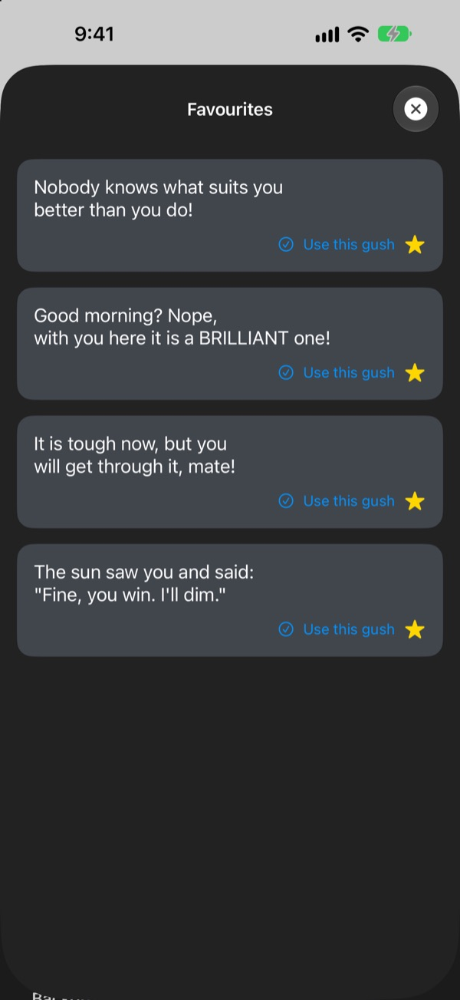

Your biggest fan,
right on your home screen
Daily Gush is a widget that compliments you far too much, on purpose. Morning gushes in the morning, pre-interview gushes before the interview. Dress it up with your own font, colours and background.
One purchase unlocks everything. No subscription, no ads.

Get a gush right now
Pick a mood and the widget shows a line for it. Tap Next gush for a random one out of all 281.
Who's the harshest critic you know? Is it you?
On the commute, before the interview, on the way home, the voice in your head mostly nags. Daily Gush takes your side from the home screen, several times a day, rather more than seems sensible. The moment you snort at your phone, a bit of confidence creeps back.
A gush to suit the moment
Choose from 14 moods and situations like Morning, Commute, Rough patch, Pre-interview and Date night, and a matching line lands on your widget straight away. Can't decide? There's Surprise me too.

Keep the ones you love
Tap the star to save a line to Favourites, and scroll back through past lines in History. Tap Use this gush and it goes straight onto your widget.

Turn up daily and watch it add up
Every day you check in keeps your streak going. Hit 7, 30 or 100 days in a row, or 50 and 100 days in total, and an achievement unlocks.

Three steps to start
- 1
Pick a mood
Open
Pick a moodand tap whatever fits right now. - 2
Style the widget
Choose a font, text colour, background and refresh interval in Advanced settings.
- 3
Add it to your home screen
Touch and hold the home screen, tap +, and find Daily Gush.
Make the widget yours
- Font
- 13 options, including Futura, Georgia and Marker Felt
- Text colour
- Any colour you fancy
- Background
- A two-colour gradient, or one of the built-in photos
- Alignment
- Left, centre or right
- Line spacing
- Tighter or looser lines
- Refresh interval
- A new line every 5, 15 or 30 minutes
You choose the widget size when you add it to the home screen.
Buy it once and that's that
The app
- 281 lines across 14 moods
- A home screen widget you can style
- Favourites and History
- Streaks and achievements
Support the developer
- Pick a small, medium or large tip
- It doesn't unlock anything. It's simply a way to say thanks
Only if and when you fancy it.
No subscription, no extra purchases, no ads.
Questions
How do I add the widget?
Touch and hold an empty spot on your home screen until the icons jiggle, tap + at the top, search for Daily Gush and pick a size.
How is the next line chosen?
When you pick a mood, a line for that mood goes straight onto your widget. After that, the widget shows a random line from all 281 at the refresh interval you chose. You can also tap Next gush in the app to skip ahead.
Can I change the widget's font or refresh interval?
Yes. In Advanced settings you can change the font, text colour, background, alignment, line spacing and refresh interval. The interval can be 5, 15 or 30 minutes.
The widget didn't change straight away.
iOS decides exactly when widgets redraw, so it can lag a little behind the interval you picked. Open the app and close it again, and the widget updates.
How does the streak work?
Each day in a row that you check in adds to your streak. My records shows your current streak, your best, total days and your achievements.
My favourites and history have gone.
Everything is stored only on your device, so it doesn't carry over if you delete the app or change phones. If you didn't delete the app and it still vanished, please drop us an email.
Is any of my data sent anywhere?
No. The app collects no personal data. Your favourites and history stay on your device.
How do I report a bug or suggest something?
Right from Contact the developer in the app, or by email or Instagram DM at @lee25_ios. We'll reply as soon as we've had a look.
Questions or feedback? Drop us a line at leeo@kakao.com.